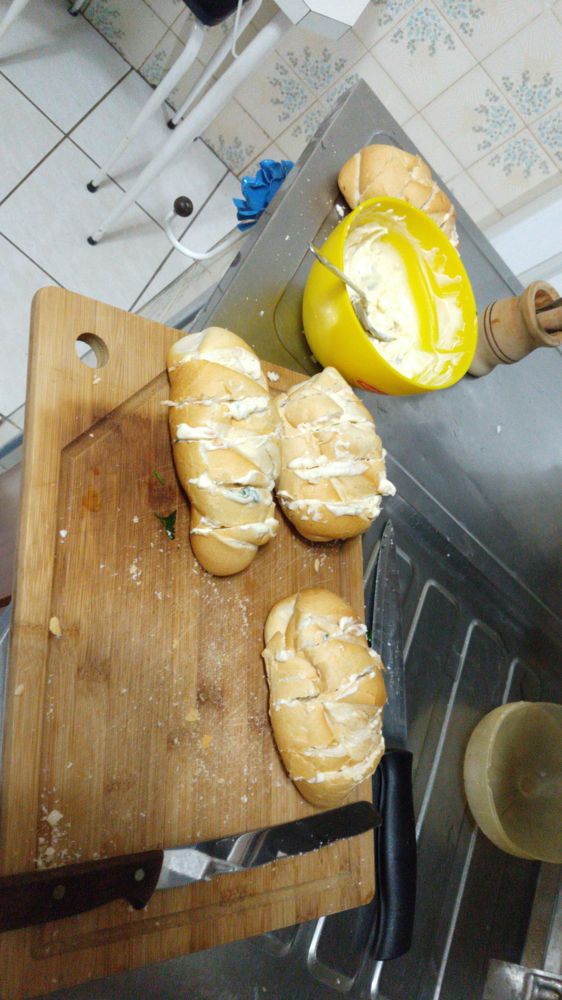

Home
Brazilian Garlic Bread

Description
Brazilian garlic bread, or "pão de alho", is a popular side dish
served at barbecues (churrascos) throughout Brazil. Unlike
traditional garlic bread, it's usually made with small rolls or
baguettes filled with a creamy garlic spread, often mixed with butter,
mayonnaise, and sometimes cheese or herbs.
Grilled over charcoal until crispy on the outside and soft on the
inside, "pão de alho" adds a rich, savory flavor to any cookout. It's
a favorite appetizer that pairs perfectly with grilled meats and
is loved for its bold taste and irresistible aroma.
Ingredients for Garlic Cream
- 250 g of mayonnaise;
- One medium garlic clove;
- Crusty bread rolls (pão de sal);
- Chives and parsley
- 3 slices of mozzarella cheese, cut into medium strips
- Grated Parmesan cheese
Steps
-
Crush the garlic clove and cut the mozzarella cheese into strips.
-
Place the mayonnaise in a bowl, add a bit of olive oil,
and mix until the texture changes slightly.
-
Add the garlic, mozzarella, grated Parmesan, chives, and parsley,
and set aside.
-
Make 4 to 5 cuts in each crusty bread roll (pão de sal) and
spread some of the mixture into each cut.
-
Sprinkle grated Parmesan over the rolls and bake until the
bread is golden brown.